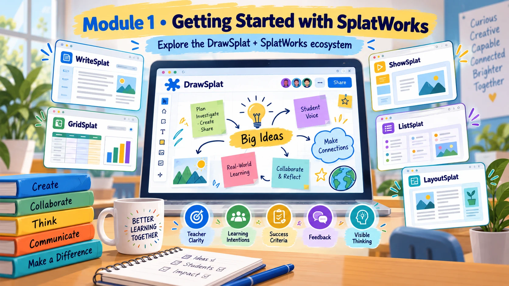
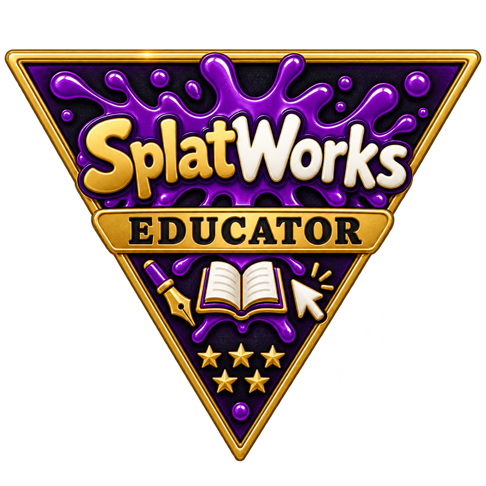

Learn it. Make it.
Bring it to class.
The SplatWorks learning management system, beginning with a practical course for educators. Teach with the tools, try the strategies, and build something for your classroom.

Your first course:
SplatWorks Educator
Five modules connect the DrawSplat whiteboard, office apps, media and creation tools, feedback routines, typing games and classroom transfer.
- Getting Started with SplatWorks
- Teach and Create with DrawSplat
- Build with SplatWorks Apps and Media Tools
- Practice, Feedback and Assessment
- Play, Type and Transfer
Written lessons, practical activities, 25 knowledge-check questions, a guide to all 68 reviewed destinations and 20 optional synthetic narrated slide overviews with captions and transcripts.

A complete LMS you can host
Accounts, enrollment, authoring, quizzes, assignments, feedback, forums, reports, badges and transcripts. Install on a PHP server with SQLite or MariaDB/MySQL, or use the included Docker setup.
bash installer/install.sh
bash installer/serve.sh 8000The installer uses administrator credentials you provide. This website introduces the product; your PHP installation runs the LMS and stores learner records.
Read the installation guideStart with a classroom pilot
Preview the course, check access and file workflows, create your learner accounts and collect feedback. SplatLMS 1.0.0 includes the first course; future courses can use the same native course format.
Research estimates in the course describe teaching approaches, not measured effects of SplatWorks apps. Credit is assigned only by an authorized provider; the bundled course has no CPE/GT hours assigned.